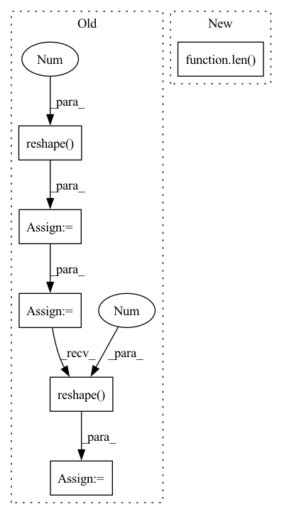

Pattern ID :6651
Before Change
grids = self.generate_grids(grid_y, grid_x,
device=self._device, dtype=self._dtype).unsqueeze(0).repeat(num_anchors,1,1,1)
wh = torch.repeat_interleave(self._anchors, grid_y*grid_x, dim=0).reshape( num_anchors, grid_y, grid_x, 2 )
prior_boxes = torch.cat([grids, wh], dim=-1)
prior_boxes[:, :, :, :2] += .5 // adjust to center
prior_boxes *= self._stride
self._prior_boxes = cxcywh2xyxy(prior_boxes.reshape( -1,4 ) ).reshape(num_anchors, grid_y, grid_x, 4)
def __call__(self, grid_y:int, grid_x:int, device:str="cpu",After Change
self.anchor_sizes = (torch.tensor(anchors) * img_size) / stride // between 0 < ? < max_grid
self.stride = stride
self.img_size = img_size
self.num_anchors = len( anchors)
def forward(self, fh: int, fw: int) -> torch.Tensor:
takes feature map h and w and reconstructs prior boxes as tensor
Args:In pattern: SUPERPATTERN
Frequency: 3
Non-data size: 6
Instances Fragment ID: 22975710
Project Name: borhanmorphy/fastface
Commit Name: 90145f768cd9599edb0618b3faf3a69310ff82f8
Time: 2021-03-12
Author: borhano.f.42@gmail.com
File Name: fastface/arch/yolov4/anchor.py
M Class Name: Anchor
N Class Name: Anchor
M Method Name: __init__(4)
N Method Name: __init__(4)
M Parent Class: nn.Module
N Parent Class:
M File Name: fastface/arch/yolov4/anchor.py
N File Name: fastface/arch/yolov4/anchor.py
M Start Line: 10
M End Line: 30
N Start Line: 12
N End Line: 19
Before Change
def forward(self, input_dict, hidden_state, seq_lens):
inputs = input_dict["obs_flat"].float()
if "conv_layer" in self.custom_config["model_arch_args"]:
x = inputs.reshape(-1 , self.raw_state_dim[0], self.raw_state_dim[1], self.raw_state_dim[2]) .permute(0, 3, 1, 2)
x = self.encoder(x)
x = torch.mean(x, (2, 3))
x = x.reshape( inputs.shape[0], -1 )
else:
x = self.encoder(inputs)
h = hidden_state[0].reshape(-1, self.hidden_state_size) // fake a hidden state no use
x = self.mlp(x)After Change
@override(ModelV2)
def forward(self, input_dict, hidden_state, seq_lens):
inputs = input_dict["obs_flat"].float()
if len( self.full_obs_space.shape) == 3: // 3D
inputs = inputs.reshape((-1,) + self.full_obs_space.shape)
x = self.encoder(inputs)
h = hidden_state[0].reshape(-1, self.hidden_state_size) // fake a hidden state no use Fragment ID: 22975700
Project Name: replicable-marl/marllib
Commit Name: b8e61fa5031b72cb8ce2321212fe3908f3468b83
Time: 2023-03-01
Author: hhhusiyi@163.com
File Name: marllib/marl/models/zoo/mlp/jointQ_mlp.py
M Class Name: JointQ_MLP
N Class Name: JointQ_MLP
M Method Name: forward(4)
N Method Name: forward(4)
M Parent Class: nn.Module,TorchModelV2
N Parent Class: nn.Module,TorchModelV2
M File Name: marllib/marl/models/zoo/mlp/jointQ_mlp.py
N File Name: marllib/marl/models/zoo/mlp/jointQ_mlp.py
M Start Line: 104
M End Line: 111
N Start Line: 59
N End Line: 62
Before Change
def forward(self, input_dict, hidden_state, seq_lens):
inputs = input_dict["obs_flat"].float()
if "conv_layer" in self.custom_config["model_arch_args"]:
x = inputs.reshape(-1 , self.raw_state_dim[0], self.raw_state_dim[1], self.raw_state_dim[2]) .permute(0, 3, 1,
2)
x = self.encoder(x)
x = torch.mean(x, (2, 3))
x = x.reshape( inputs.shape[0], -1 )
else:
x = self.encoder(inputs)
h_in = hidden_state[0].reshape(-1, self.hidden_state_size)
h = self.rnn(x, h_in)After Change
@override(ModelV2)
def forward(self, input_dict, hidden_state, seq_lens):
inputs = input_dict["obs_flat"].float()
if len( self.full_obs_space.shape) == 3: // 3D
inputs = inputs.reshape((-1,) + self.full_obs_space.shape)
x = self.encoder(inputs)
h_in = hidden_state[0].reshape(-1, self.hidden_state_size) Fragment ID: 22975762
Project Name: replicable-marl/marllib
Commit Name: b8e61fa5031b72cb8ce2321212fe3908f3468b83
Time: 2023-03-01
Author: hhhusiyi@163.com
File Name: marllib/marl/models/zoo/rnn/jointQ_rnn.py
M Class Name: JointQ_RNN
N Class Name: JointQ_RNN
M Method Name: forward(4)
N Method Name: forward(4)
M Parent Class: nn.Module,TorchModelV2
N Parent Class: nn.Module,TorchModelV2
M File Name: marllib/marl/models/zoo/rnn/jointQ_rnn.py
N File Name: marllib/marl/models/zoo/rnn/jointQ_rnn.py
M Start Line: 104
M End Line: 112
N Start Line: 57
N End Line: 60